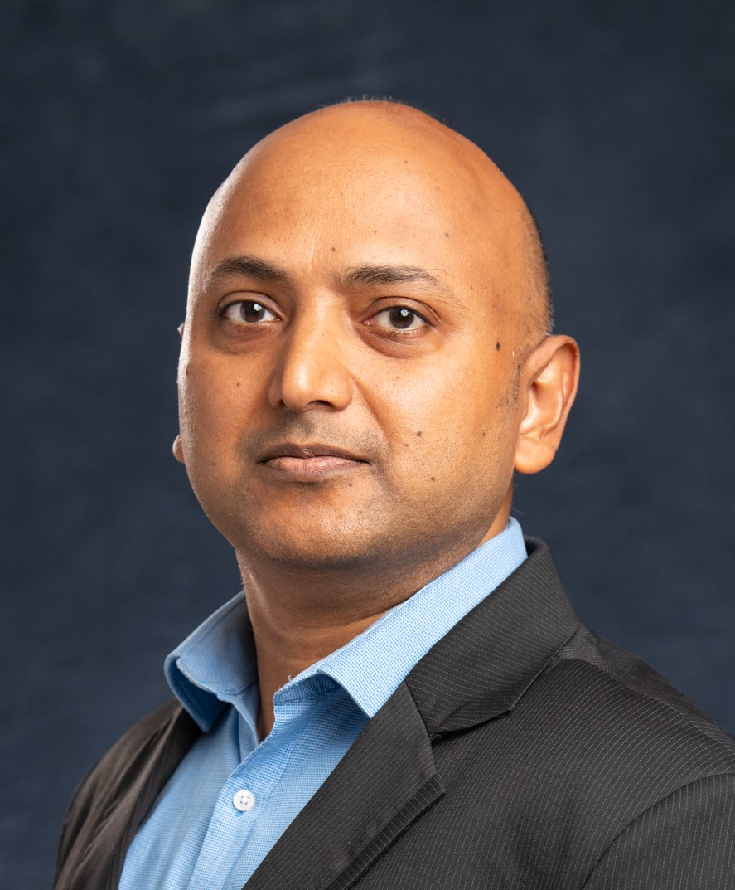

IIT Kanpur · Electrical Engineering
Chair Professor & Ministry of Skill Development Chair
Department of Electrical Engineering, IIT Kanpur 208016, India

Areas of Expertise
WLS and hybrid state estimation, PMU integration, observability analysis, bad data detection, PMU placement using ILP and greedy algorithms.
Phasor measurement units (PMUs), synchronized measurement systems, uncertainty quantification, WAMS for monitoring and protection.
Monitoring, control, and protection of smart grid systems. Stability and control with high penetration of renewable energy sources.
Operation, control, and energy management of microgrids. Distributed generation integration and droop-based control strategies.
Distribution system state estimation, planning and operation of distribution networks, coordinated transmission–distribution estimation.
Generator and load modelling, voltage stability analysis, static load modelling, voltage stability indices.
Biography
Prof. Saikat Chakrabarti completed his PhD in Electrical Engineering from the Memorial University of Newfoundland, Canada, in 2006. Prior to his doctoral studies, he worked at Asea Brown Boveri (ABB) Limited, India and at the Bhabha Atomic Research Centre (BARC), India.
Following his PhD, he served as a Special Scientist at the University of Cyprus, and subsequently as a Research Associate and then Lecturer at the Queensland University of Technology, Brisbane, Australia.
Since 2009, he has been with the Department of Electrical Engineering at IIT Kanpur, where he has held the position of Chair Professor since 2018. He was appointed to the Ministry of Skill Development and Entrepreneurship Chair. From July 2023, he served as Chair Professor and Director of the Emera and NB Power Research Centre for Smart Grid Technologies at the University of New Brunswick, Fredericton, Canada.
His research focuses on the monitoring, control, and protection of smart transmission and distribution systems and microgrids. He is the author of over 236 publications including journal papers, conference papers, and books, with over 7,800 citations and an h-index of 33.
Academic Timeline
Scholarly Work
International Journal of Electrical Power and Energy Systems, Vol. 87, pp. 43–51
S. M. Ashraf, A. Gupta, D. Choudhary, S. Chakrabarti
IEEE Systems Journal, Vol. 10, No. 1, pp. 69–77
S. K. Mallik, S. Chakrabarti, S. N. Singh
IEEE Transactions on Power Systems, Vol. 31, No. 2, pp. 1661–1662
M. Asprou, S. Chakrabarti, E. Kyriakides
IEEE Transactions on Power Delivery
R. Majumder, G. Ledwich, A. Ghosh, S. Chakrabarti, F. Zare
IEEE Transactions on Instrumentation and Measurement, Vol. 58, No. 8, pp. 2452–2458
S. Chakrabarti, E. Kyriakides, M. Albu
IEEE Transactions on Power Systems
S. Chakrabarti, E. Kyriakides
Electric Power Systems Research, Vol. 77, Issue 7, pp. 780–787
V. Patel, S. Chakrabarti, S. N. Singh
Updates